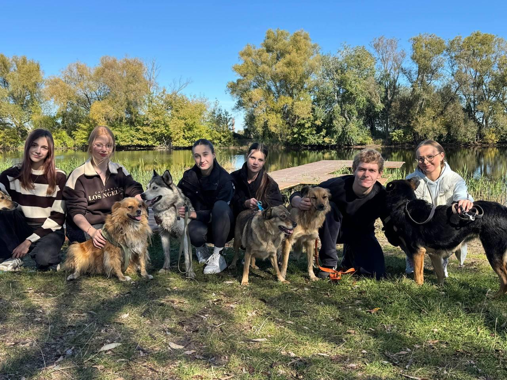

Aktuelles
Kyrylo Syniavskyi aus der Ukraine an die Schulgemeinschaft des Domgymnasium
von Christian Bode
Liebe Schulgemeinschaft!
Mein Name ist Kyrylo Syniavskyi, bin 17 Jahre alt und stamme aus Konotop, im Osten der Ukraine. 2025 war ich im Rahmen des UNESCO-Recreation-Projektes in Verden und 2026 anlässlich eines schulinternen Austausches zwischen dem Lyzeum Nr. 1 in meiner Heimatstadt und dem Domgymnasium.
Meine Eindrücke aus Verden und mein Engagement für ein Hundetierheim habe ich in einem kurzen Film verarbeitet. Ich bin der Meinung, dass es wichtig ist, dass Sie alle dieses Video sehen, denn es geht nicht nur um das Tierheim. Es geht um unseren Schulaustausch, unsere Zeit in Verden und bei unseren Gastfamilien, darum, welche Entwicklung diese Zeit in unsere Schule gebracht hat, wie sie uns verändert hat, und um die Bedeutung solcher Erfahrungen und der Unterstützung für unsere Kinder und Schulen. Dieses Video ist Ausdruck unserer aufrichtigen Dankbarkeit gegenüber den Deutschen.
Ich habe meinen Gruppen von Kindern, mit denen ich die Hunde spazieren führe, von der Aufmerksamkeit und dem Mitgefühl erzählt, das ihnen von mitfühlenden Menschen in Deutschland entgegengebracht wird – und sie können sich kaum vorstellen, dass so etwas möglich ist. Das ist eine große Unterstützung und Motivation für sie. Man hat uns bereits geholfen, Halsbänder und Spielzeug für die Hunde zu sammeln, und einige Spenden wurden auch schon getätigt. Jeder Aufruf und jeder Kommentar zum Video bedeutet uns allen sehr viel.
Unser Hauptziel ist es nicht, um Hilfe zu bitten. Wir möchten einfach, über uns erzählen und zeigen, dass wir auch Menschen sind, auch für Tiere sorgen, auch leben, auch uns entwickeln wollen und verstehen, was um uns herum passiert.
Vielen Dank, Kyrylo
YouTube Video Link: https://youtu.be/m6rb92vNY5A?si=BaZHm8few3JB6ORR
Paypal Mailadresse für Spenden und sonstige Anfragen: prytulokkonotop@gmail.com

